A student commuting problem translated into a tested front-basket concept through stakeholder analysis, and the processes of divergence, calculations, and convergence to reach at a single design.
A student commuter problem translated into an engineering design concept.
Our group started from a specific splartz: Engineering Science students often use
Toronto Bike Share bikes to get to class, but the stock front basket is too small for
a full backpack. That forces the rider to keep the load on their back even though the
ride posture already increases spinal stress.
The report recommends a foldable front basket extension that mounts to the existing
basket, carries the bag in front of the rider, and stores at roughly laptop scale.
This solves the problem of back pain and improves overall ride stability.
Praxis ICADMATLABProxy testingPrototyping
Opportunity and context
The need
The report frames the problem around spine discomfort during commuting. Many Engineering Science students
commute using Toronto Bike Share bicycles and need to carry backpacks. Studies show that carrying a heavy
backpack while cycling can increase spinal stress and discomfort.
The report also highlights the need for a solution that is easy to use and does not interfere with the normal operation of the bike-share system.
All domains of road safety must be considered, including the impact on visibility, stability, and predictability of the bicycle.
With all these considerations and after having performed multiple tests, the front attachment is recommended as the best overall solution to the problem.
Stakeholders
All stakeholders must be considered for a valid design.
Primary: Praxis I and Engineering Science students who want to transport their bags without back pain and without making the riding experience worse.
Secondary: Toronto drivers and other Bike Share users who should not be disturbed by a wider, less stable, or less predictable bicycle.
Tertiary: Bike Share Toronto and the Government of Ontario, who require legal compliance, preserved visibility, and no visible damage to the bicycles.
Scoping
Requirements and evaluation criteria
The need led the team to develop a set of
requirements and evaluation criteria listed below to determine which designs outperformed others. More detail is provided in the full PDF report.
Requirement 1
Must fit in a standard backpack
The device must be portable to meet the stakeholders’ needs. To achieve this, the
device must fit in a standard backpack. The achievment of this requirement is evaluated by
how close the dimensions are to those of a standard laptop.
Requirement 2
Protect the backpack and its contents
The attachment must secure the bag without applying enough force to permanently
deform the backpack or the objects stored inside it.
Requirements 3-5
Keep the system secure, quick, and simple
The design must hold the bag securely during riding while still staying easy to use,
with fewer than 20 steps and fewer than 30 different parts.
Requirements 6-8
Preserve safety, the bike, and ride stability
It also has to follow road and safety regulations, avoid visible damage to Bike
Share Toronto bicycles, and keep the bike's center of mass as low as possible.
Gallery
Process evidence from the BikePack Buddy report.
Pictures from the report are included below. Click any figure to open a larger view.
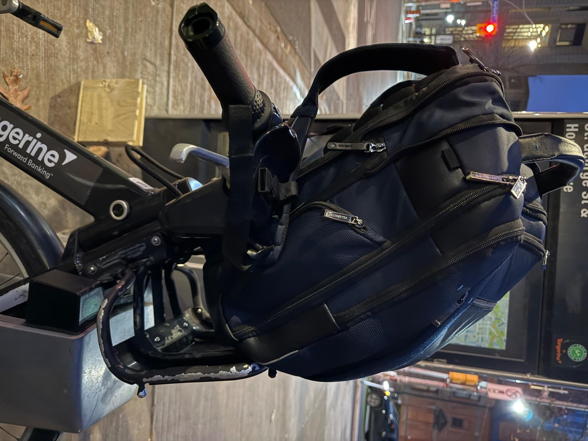
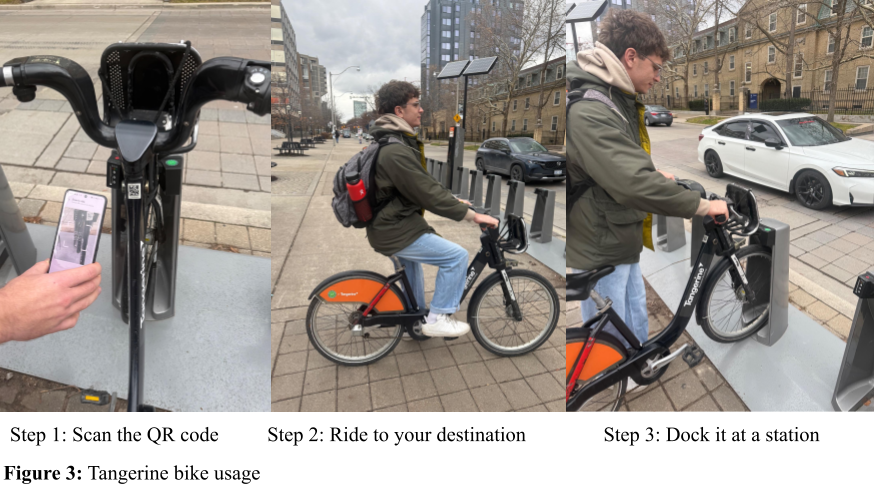
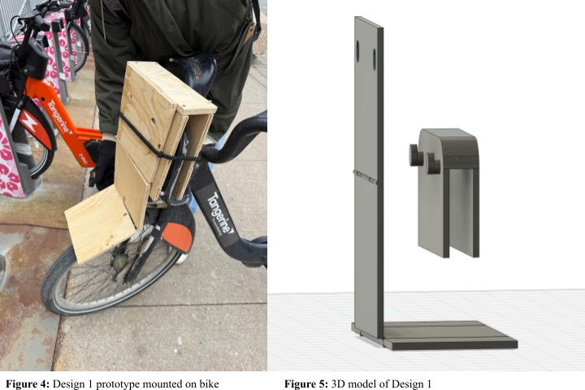
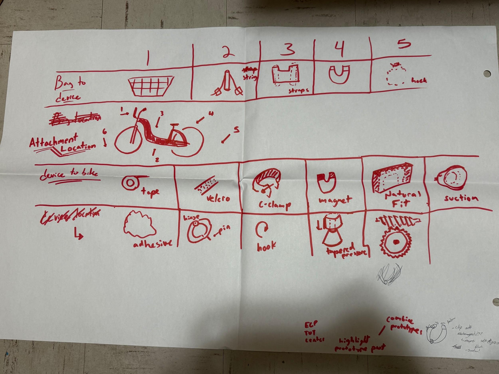
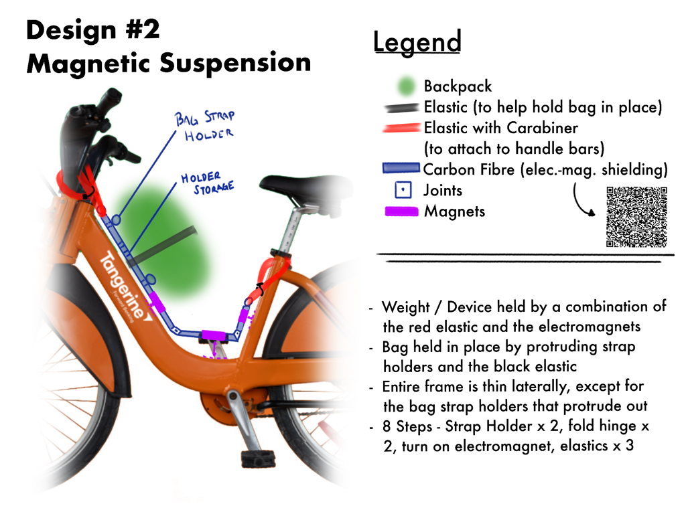
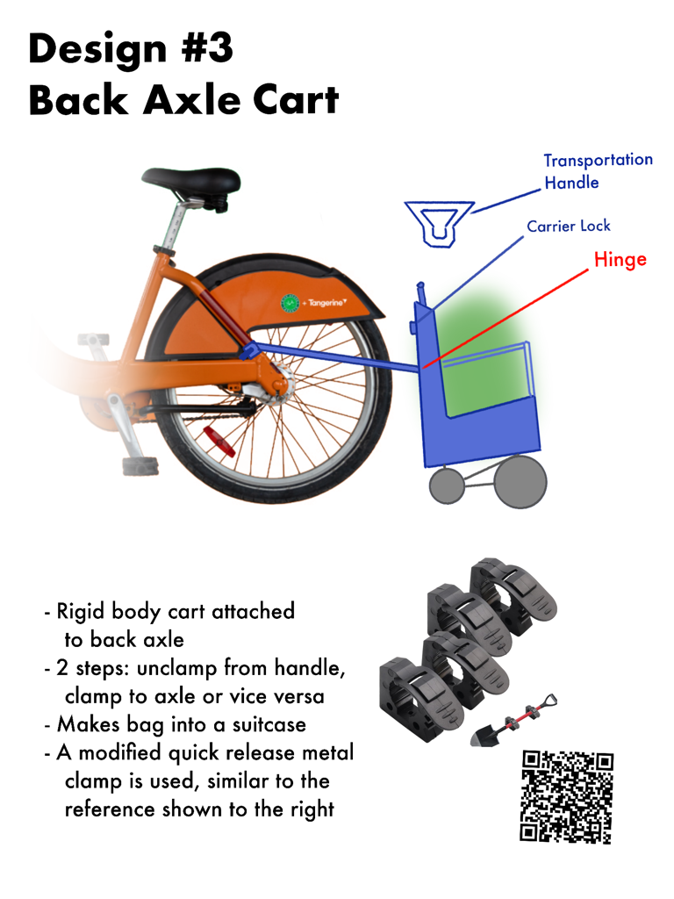
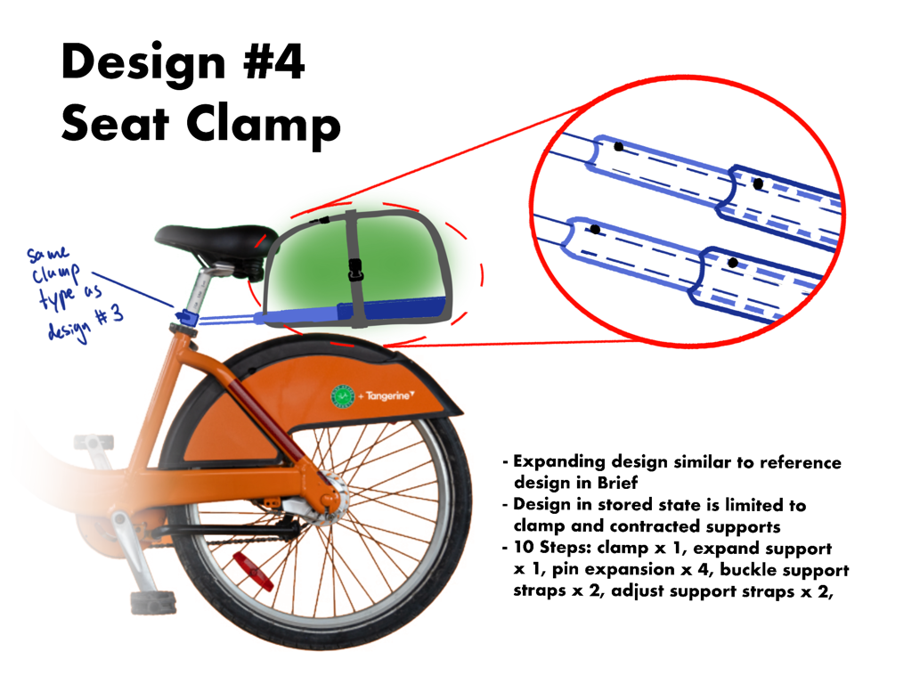
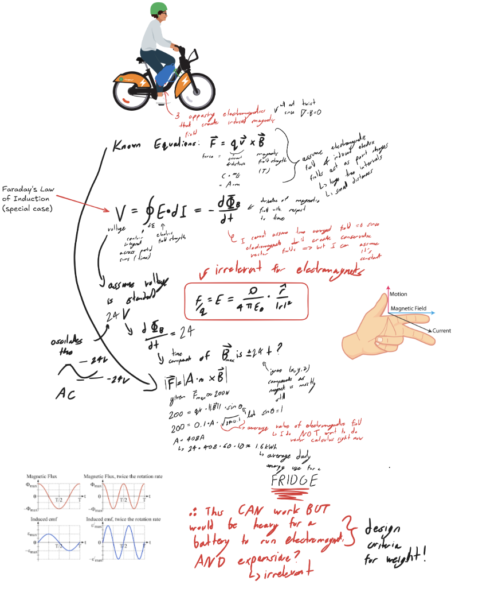
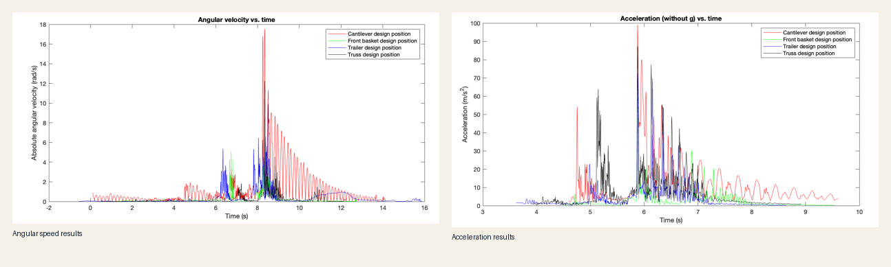
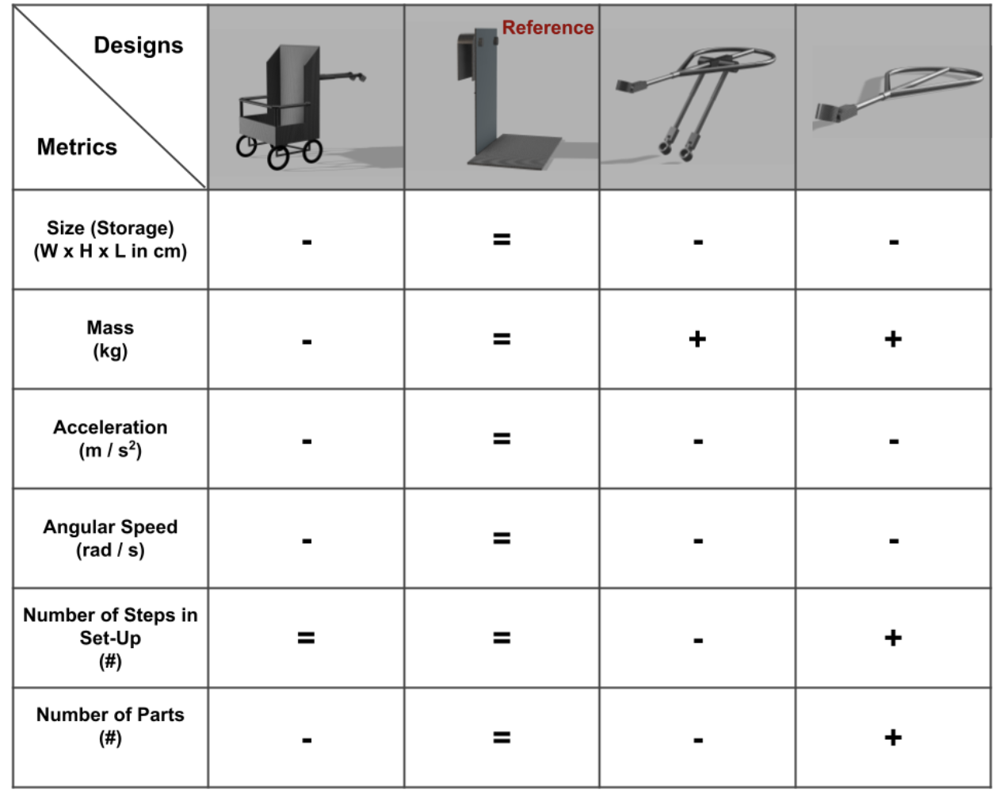
Recommendation
Why the front basket extension was recommended over the other candidates
Testing showed that the front basket extension provided the best balance of
stability, compactness, and ease of use among the candidates.
Why it won
The recommended design delivers the lowest
self-weight, volume, angular momentum, and acceleration experienced by the backpack
among the candidate designs, while also taking advantage of the elastics already
present on the front of the bike. This makes it stand out in terms of overall
performance and user experience among the other candidates.
What it still traded away
The front basket design was not the best on every single metric, but it provided an acceptable
compromise in the areas of stability, compactness, and ease of use. The design met the most important
requirements while still allowing for some trade-offs in less critical areas. Overall, the design
was able to balance competing demands effectively. Therefore the team felt confident in its recommendation.
Why the recommendation is qualified
The final decision was based on a thorough evaluation of the design's performance across all key metrics, as well as its alignment with stakeholder needs and preferences.
We evaluated this basing our analysis on data gathered through testing as well as stakeholder analysis.
Annotated process
Three CTMFs that best explain the BikePack Buddy process
The assignment asks for three distinct CTMFs. For this project, I will provide one framing CTMF, one divergence CTMF, and one convergence CTMF. Each one will be explained in terms of what it is, how it appeared in the project, why it was useful, and how it connects to my position statement.
Click any CTMF card to open the full annotated review, figures, and assessment.
Position statement reflection
How BikePack Buddy contributed to my position on engineering design
These section explains how this project affected my position to engineering design.
Careful planning
BikePack buddy was the first project where I had to carefully design everything before going into the next step, with proper
due dilligence. For example we had to take into account every stakeholder and how our device will affect them. We had to find secondary
research for every claim to make sure that they are not made up, and think of every scenario, before recommending the final design.
Compromising and working with "autorities
As explained in my position statement working on the Praxis I project exposed me to working with "autorities". Before this I was always either
the director of the team, or there was one clear "Authority", but here the full groyp just had "authorities" of equal standing. This was a real
growing experience as a person and as an engineer.
CTMF detail
CTMF 01
Stakeholder analysis
This CTMF focuses on identifying and understanding the key stakeholders involved in the
BikePack Buddy project. By mapping out their needs, concerns, and interactions with the
design, the team was able to create a more user centered solution.
Explanation of the CTMF
This CTMF consists of systematically identifying the parties involved in the BikePack Buddy
project. This includes understanding their needs, concerns, and how they interact with the
design. Also we broke them down into primary, secondary, and tertiary stakeholders.
First you start by identifying a need you are trying to solve. Having the need you can go into identifying the
specific stakeholders that will be affected by your solution. You start from identifying the primary stakeholders, which
are the ones directly affected by your design. Having the primary stakeholders identified we start to look at the secondary, this
can expand similarily to a lotus blossom graph, but not neccesarily, this means that you can also explore stakeholders that are indirectly affected or have a more peripheral interest in the project.
You start thinking more and more about the relationships between these stakeholders and how their needs might intersect or conflict and how the design
how affect people who do not come in contact with your design.
CTMF use in the project
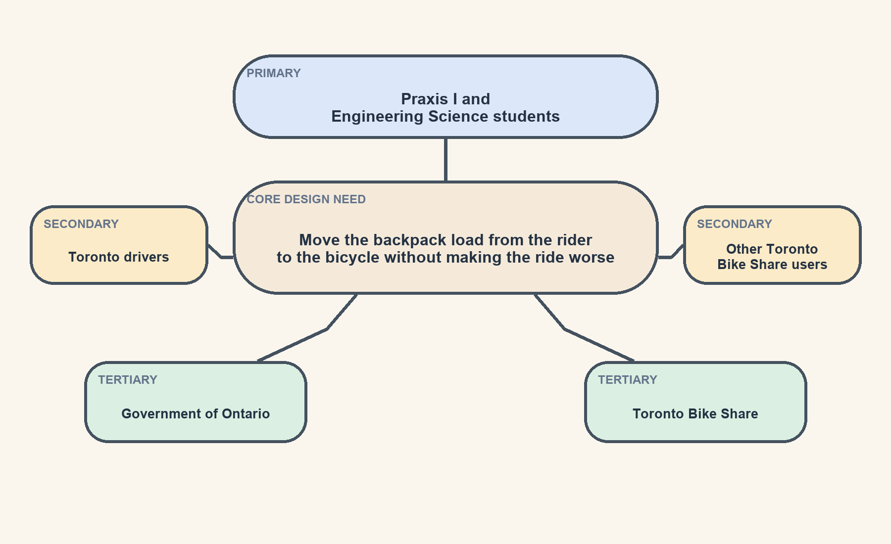
The report uses stakeholder analysis to separate the directly affected users from the broader road, regulatory, and system context around the design.
Primary: Praxis I and Engineering Science students want their bags transported without back pain and without making the riding experience worse.
Secondary: Toronto drivers and other Toronto Bike Share users should not be disturbed by a wider, less stable, or less predictable bicycle.
Tertiary: The Government of Ontario and Toronto Bike Share require legal compliance, preserved bicycle usability, and no visible or permanent damage to the bikes.
Why it was useful
This CTMF is crucial in the process of engineering design, because it provides important context
for the project and it is the backbone for the needs, goals and objectives and requirements
that guide the design process. Also, it helps to ensure that all stakeholders are considered
and that their needs are addressed throughout the design process. Additionally it prevents our
design from harming people unintentionally.
Why it fits my position statement
This process connects to my position statement, specifically to the initial processes in my approach
to engineering design, which emphasizes the importance of defining a good opportunity and checking red lines. By
ensuring that all stakeholders are accounted for, I can ensure that no red lines are crossed, and that the final
design is more likely to improve the stakeholders' lived experience.
CTMF 02
SCAMPER
This CTMF uses a simple process to encourage creative thinking around one design.
Explanation of the CTMF
SCAMPER stands for:
Substitute
Combine
Adapt
Modify
Put to another use
Eliminate
Reverse
By using SCAMPER, you basically divide the design into different pieces, and you modify
them to explore new possibilities. You can either substitute them for other approaches,
straightly eliminate them or combine them with other components to create new concepts.
How it appeared in the project
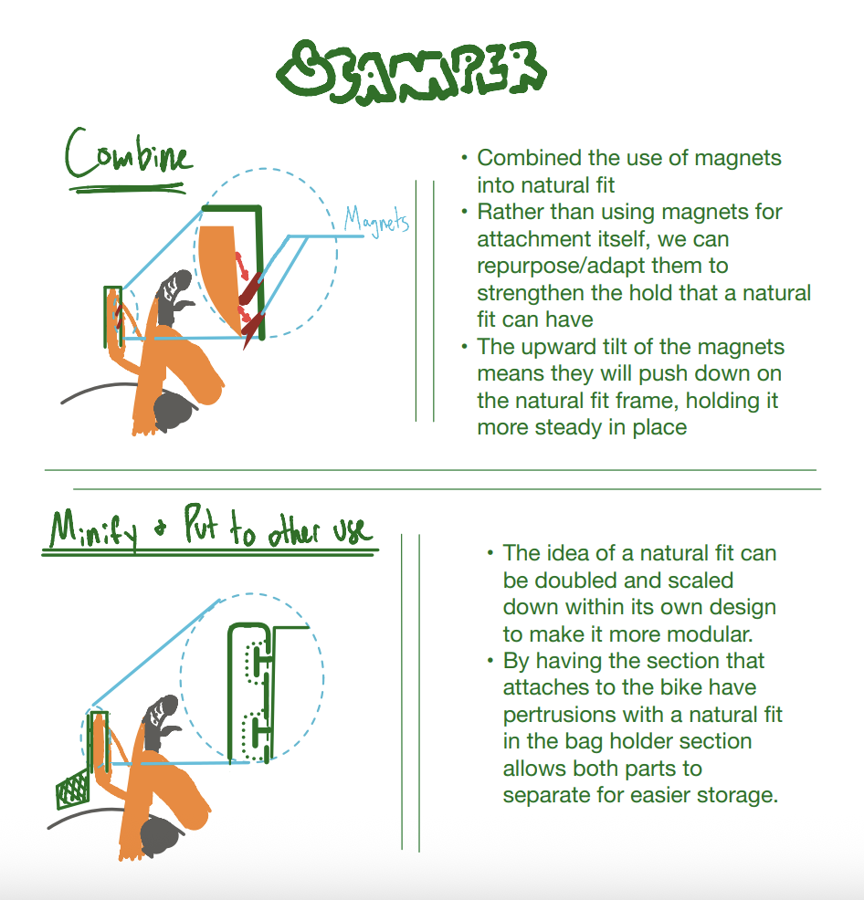
As it is shown in the figure, the team used SCAMPER to generate new concepts around the front basket design.
First we combined the use of magnets into the natural fit design. We not only used the "Combine" method, but we also adapted the
magnets so they don't "stick" to the bike, but so they strengthen the hold that the base design had.
At first the natural fit design would've been a simple one piece basket, but through SCAMPER we modified it to be a foldable modular design.
With the "Put to another use" method, we explored the possibility of using the main attachment as a storage box for the
actual holder, which would make the design more compact and easier to store when not in use. This was a key modification that made the design more practical for the stakeholders.
Why it was useful
SCAMPER allowed us to explore many new possibilities around the front basket design concept, which not only
made the team more confident that the final chosen design was the correct one after having explored various alternatives, but it also
gave the team the idea to use the device as a self-storage solution. By this I mean the way it folds and stores itself, which
ended up being a crucial feature when it came to deciding which design is the best.
Why it fits my position statement
This CTMF perfectly fits with my first point in the section "My position on engineering design", because SCAMPER encourages careful
planning before proceeding with a design and wasting resources and time. It allows for a more thoughtful exploration of ideas, leading to better outcomes.
CTMF 03
Prototyping
We used prototyping to verify deisgn concepts.
Explanation of the CTMF
Prototypes are an essential part of engineering design. The goal of prototyping as explained in Praxis I/II
is to showcase the most "unbeliveable" part of the design. It aims to validate early concepts, to facilitate
communication between teammates and stakeholders and also it helps the team converge into a better design. It consists
in designing a simple, low-fidelity device that would "prove" that the basic idea is valid and that the concept would work
in later high-fidelity prototypes and in the final design.
Prototypes can consist of both physical low-fidelity devices, 3D CAD models that would showcase a feature or even
a simulation that would simulate the device's function without having to build and test it in real life.
How it appeared in the project
The team believed that the final design that would meet the Stakeholders' need best was Design 1, the "natural fit" design. To showcase that the concept
was valid and that it would work in later stages we decided to develop a prototype that was later used in proxy testing. It was created using scrap wood from
Myhal, thus it was a low-fidelity prototype, but it allowed the team to learn useful things about the design, such as the fact that it folded well into the
size of a laptop or that the design has the lowest vibrations of all 5 designs.
Why it was useful
The prototype allowed the team to go from only "theoretical" information used for convergence to see the design in real life and in real situations. By this we
could see that all stakeholders' needs were achieved, for example that it folded into the size of a laptop, or that the bike showed no scratches after the usage.
Why it fits my position statement
This approach fits perfectly with the "iterate" section of my approach to engineering design flowchart. Inspired by SpaceX's rapid iteration I believe that
early stage prototyping is essential to creating a good design. As they say in the movie "Oppenheimer", theory will only take you so far. Therefore I believe
that early prototypes are essential to the design process. But they must be carefully designed with due dilligence so they do not cause harm.